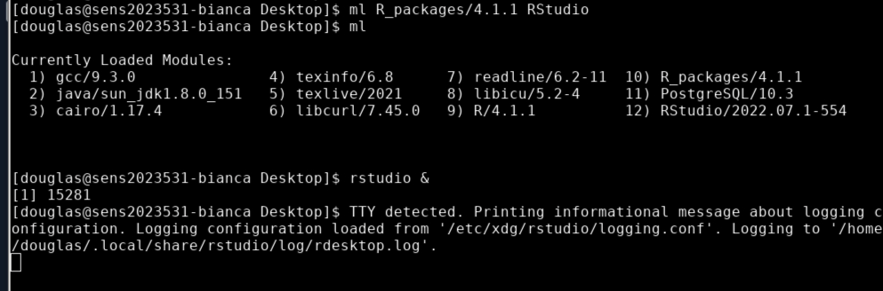
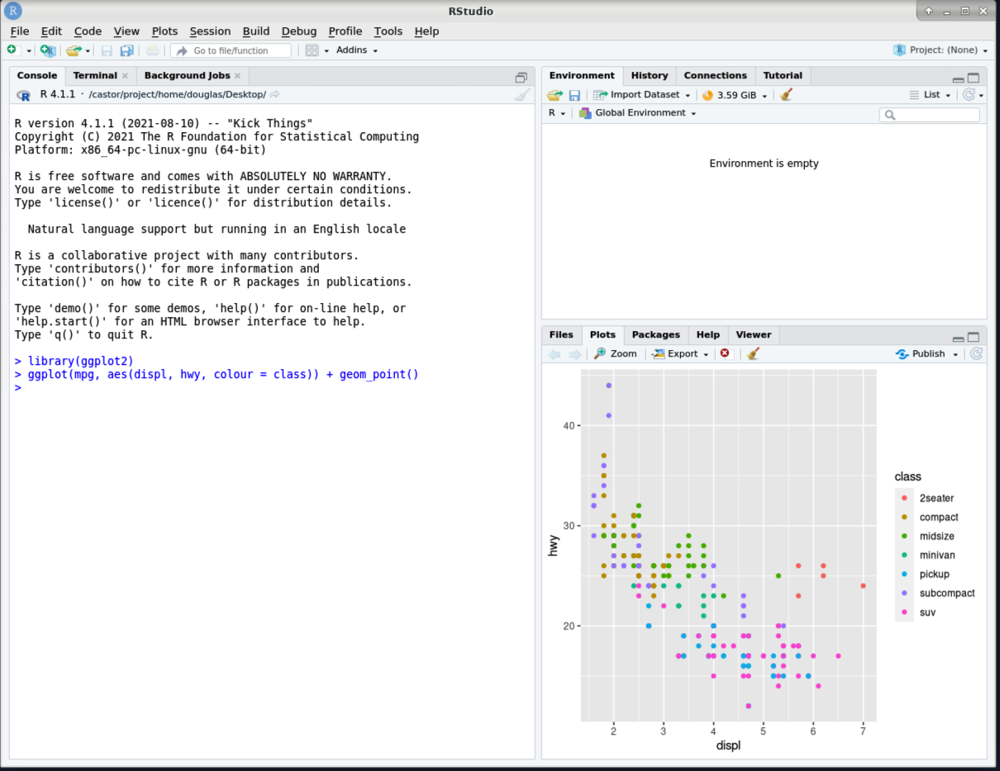
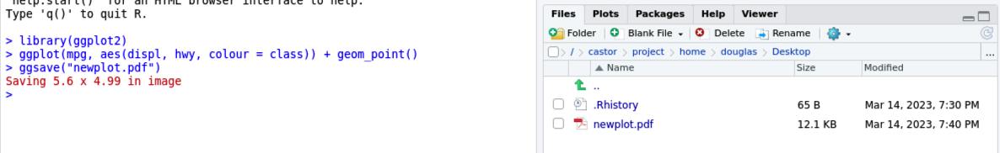

Working with environment modules on Bianca¶
Objectives
- Being able to search/load/unload modules
- Create an executable Bash script that uses a module (without SLURM)
Notes for teachers
Teaching goals:
- The learners demonstrate they can find a module
- The learners demonstrate they can load a module of a specific version
- The learners demonstrate they can unload a module
- The learners demonstrate they can load a module in a script
gantt
title Lesson plan on modules
dateFormat X
axisFormat %s
Prior knowledge: prior, 0, 5s
Theory: theory, after prior, 5s
Exercises: crit, exercise, after theory, 25s
Feedback: feedback, after exercise, 10sExercises¶
Use the UPPMAX documentation on modules to do these exercises.
Video with solutions
There is a video that shows the solution of all these exercises: YouTube
1a. Verify that the tool cowsay is not available by default
Gives the error message: cowsay: command not found.
1b. Search for the module providing cowsay
You will find the cowsay/3.03 module.
1f. Verify that the tool cowsay is not available anymore
Gives the error message: cowsay: command not found.
2a. Create an executable script called cow_says_hello.sh. It should load a specific version of the cowsay module, after which it uses cowsay to do something
Copy-paste this example text:
Make the script executable:
Run:
2b. Find out: if the cowsay module is not loaded, after running the script, is it loaded yes/no?
Running the script does not load the module beyond running the script.
3. module load samtools/1.17 gives the error These module(s) or extension(s) exist but cannot be loaded as requested: "samtools/1.17. How to fix this?
If you do module load samtools/1.17 without
doing module load bioinfo-tools first, you'll get the error:
$ module load samtools/1.17
Lmod has detected the following error: These module(s) or
extension(s) exist but cannot be loaded as requested: "samtools/1.17"
Try: "module spider samtools/1.17" to see how to load the module(s).
The solution is to do module load bioinfo-tools first.
Want more complex/realistic exercises?
The goal of this lesson is to work with the module system in a minimal/fast way. These exercises do not achieve anything useful. See 'Bigger exercises' for more complex/realistic exercises
Bigger exercises¶
Hands on: Running R within RStudio, use ggplot2 from R_packages/4.1.1
-
Load the
R_packages/4.1.1module and the latestRStudiomodule, and start RStudio withrstudio &.
-
Load the
ggplot2R library, provided byR_packages/4.1.1, and produce an example plot.
-
Save the plot using
ggsave.
Hands on: Loading the conda/latest module
- Load the
conda/latestmodule.$ ml conda/latest The variable CONDA_ENVS_PATH contains the location of your environments. Set it to your project's environments folder if you have one. Otherwise, the default is ~/.conda/envs. Remember to export the variable with export CONDA_ENVS_PATH=/proj/... You may run "source conda_init.sh" to initialise your shell to be able to run "conda activate" and "conda deactivate" etc. Just remember that this command adds stuff to your shell outside the scope of the module system. REMEMBER TO USE 'conda clean -a' once in a while
We want to set the CONDA_ENVS_PATH variable to a directory within our project, rather than use the default which is our home directory.
If you do not set this variable, your home directory will easily exceed its quotas when creating even a single Conda environment.
This will be covered in more detail in the afternoon.
Do this one on an interactive/computer node!
Please, do the exercise below on an interactive node! The tools use too much resources to be used on a login node. Alternatively, use the Slurm scheduler instead :-)
Warning
- To access bioinformatics tools, load the bioinfo-tools module first.
Hands on: Processing a BAM file to a VCF using GATK, and annotating the variants with snpEff
This workflow uses a pre-made BAM file that contains a subset of reads from a sample from European Nucleotide Archive project PRJEB6463 aligned to human genome build hg38. These reads are from the region chr1:100300000-100800000.
-
Copy example BAM file to your working directory.
-
Take a quick look at the BAM file. First see if
samtoolsis available. -
If
samtoolsis not found, loadbioinfo-toolsthensamtools/1.17 -
Now create an index for the BAM file, and examine the first 10 reads aligned within the BAM file.
-
Looks good. Now load the
GATK/4.3.0.0module. -
Make symbolic links to hg38 genome resources already available on UPPMAX. This provides local symbolic links for the hg38 resources
genome.fa,genome.fa.faiandgenome.dict. -
Create a VCF containing inferred variants. Speed it up by confining the analysis to this region of chr1.
This produces as its output the files$ gatk HaplotypeCaller --reference genome.fa --input ERR1252289.subset.bam --intervals chr1:100300000-100800000 --output ERR1252289.subset.vcfERR1252289.subset.vcfandERR1252289.subset.vcf.idx. -
Now use
snpEff/5.1to annotate the variants. LoadingsnpEff/5.1results in a change of java prerequisite. Also take a quick look at the help for the module for help with running this tool at UPPMAX.$ ml snpEff/5.1 The following have been reloaded with a version change: 1) java/sun_jdk1.8.0_151 => java/OpenJDK_12+32 $ ml help snpEff/5.1 ------------------- Module Specific Help for "snpEff/5.1" -------------------- snpEff - use snpEff 5.1 Version 5.1 Usage: java -jar $SNPEFF_ROOT/snpEff.jar ... Usage: java -jar $SNPEFF_ROOT/SnpSift.jar ... along with the desired command and possible java options for memory, etc Note that databases must be added by an admin -- request via support@uppmax.uu.se See http://snpeff.sourceforge.net/protocol.html for general help Every database that is provided by snpEff/5.1 as of this installation is installed. This complete list can be generated with java -jar $SNPEFF_ROOT/snpEff.jar databases Three additional databases have been installed. Database name Description Notes ------------- ----------- ----- c_elegans.PRJNA13758.WS283 Caenorhabditis elegans genome version WS283 MtDNA uses Invertebrate_Mitochondrial codon table canFam4.0 Canis familiaris genome version 4.0 fAlb15.e73 Ficedula albicollis ENSEMBLE 73 release The complete list of locally installed databases is available at $SNPEFF_ROOT/data/databases_list.installed To add your own snpEff database, see the guide at http://pcingola.github.io/SnpEff/se_buildingdb/#option-1-building-a-database-from-gtf-files -
Annotate the variants.
-
Take a quick look!
-
Compress the annotated VCF and index it, using
bgzipandtabixprovided by thesamtools/1.17module, already loaded.